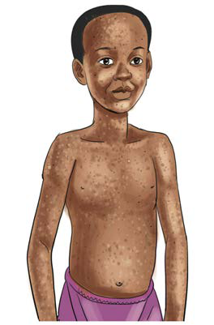

kutumia vyoo kwa usahihi. Tunapaswa kunawa mikono kwa maji safi yanayotiririka na sabuni baada ya kutoka chooni na kabla ya kula chakula. Mtu akipatwa na kipindupindu apelekwe hospitali haraka au katika kituo maalumu kilichotengwa kwa ajili ya ugonjwa huo.
Zoezi namba 3
1.Eleza jinsi ugonjwa wa kipindupindu unavyoweza kuenea.
2.Unawezaje kumtambua mtu mwenye kipindupindu?
3.Ni mambo gani ya kufanya ili kuzuia kipindupindu?
4.Eleza kwa nini ni muhimu kunawa mikono yako kwa sabuni na maji safi yanayotiririka baada ya kutumia choo.
Tetekuwanga
Tetekuwanga ni ugonjwa unaosababishwa na virusi. Ugonjwa huu huambukizwa kwa njia ya kugusana mwili na mtu aliye na tetekuwanga. Pia, huweza kuambukizwa kwa kuvaliana nguo na mtu aliye na tetekuwanga.
Dalili za tetekuwanga
Dalili za tetekuwanga ni pamoja na homa kali na kuumwa kichwa. Vilevile, kutoka na vipele vinavyowasha ambavyo hubadilika kuwa malengelenge yanayotoa usaha au majimaji. Wakati mwingine ugonjwa huu huacha makovu ya kudumu kwenye ngozi. Kielelezo namba 3 kinaonesha mgonjwa wa tetekuwanga.

Kielelezo namba 3:
Mgonjwa wa tetekuwanga
Namna ya kuzuia tetekuwanga
Tetekuwanga huzuiwa kwa kutochangia mavazi na kuzingatia usafi wa mwili na mavazi kwa mgonjwa. Vilevile, dawa ya kuua vimelea vya magonjwa itumike wakati wa kusafisha mwili na kufua nguo. Aidha, tetekuwanga huzuiwa kwa chanjo.